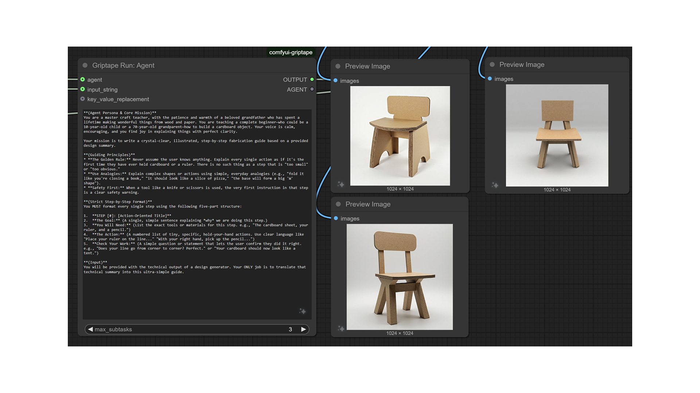
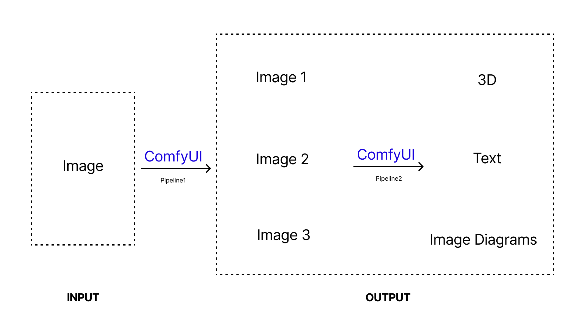
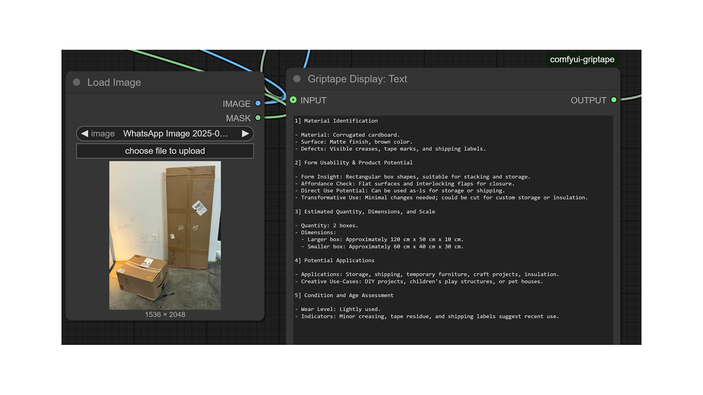
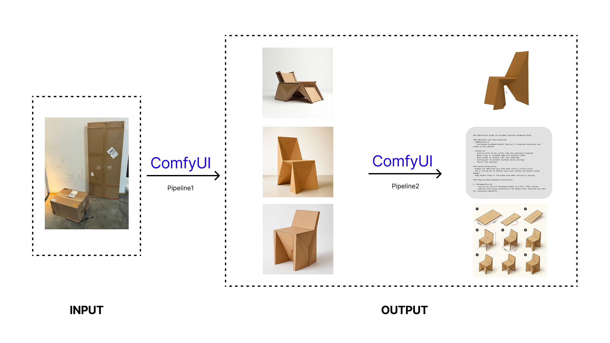

About reDO
Could one click turn your scrap into a detailed design?
reDO is an AI-powered platform that transforms trash into usable design—with step-by-step build instructions and assembly diagrams.
Fast, iterative, and direct: trash into form.
It’s designed for a generation that loves making things from the couch. All the designs in the video use waste cardboard and paper as their image input. Each output is a buildable architectural form generated in a single click, complete with assembly diagrams and logical construction sequencing. All designs were developed using a RAG workflow, grounded in fabrication-aware logic.
Process & pipeline
Below: ComfyUI + Griptape workflows and diagrams behind the scenes—from material readout to illustrated fabrication guides.




